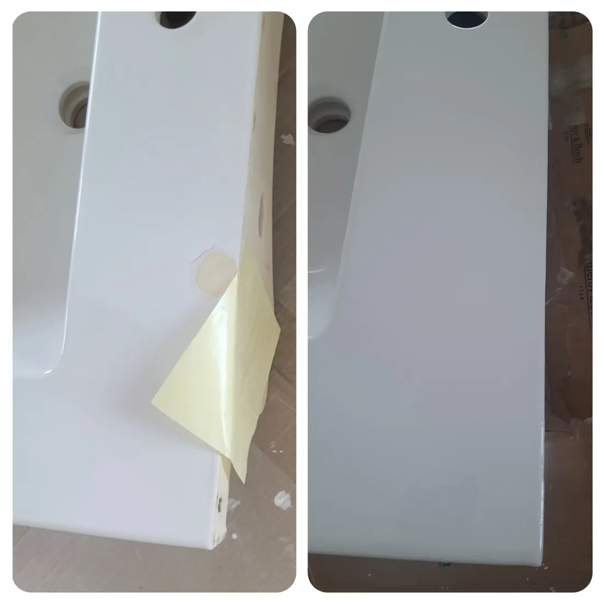

Мы в Санкт-Петербурге восстанавливает локальные косметические дефекты керамических раковин: сколы, потертости и повреждения глазури. Чтобы понять, можно ли восстановить вашу раковину, нужны фотографии и осмотр. Трещины корпуса, протечки и повреждения креплений не относятся к этой услуге.
Какие повреждения раковины можно оценить
Рассматриваем скол на бортике, передней кромке или видимой поверхности чаши, локальный дефект глазури и следы транспортировки. Значение имеет не только размер: одинаковый по площади скол на декоративной кромке и рядом с креплением требует разного решения. В заявке укажите точное место повреждения.
Подходят запросы по накладным, подвесным и встраиваемым раковинам из сантехнической керамики, в том числе фаянса и фарфора. Материал проверяем по модели или маркировке. Для мойки из искусственного камня или металла нельзя автоматически применять условия реставрации керамики.
Как получить оценку ремонта раковины
- Сфотографируйте всю раковину, чтобы были видны форма и расположение дефекта.
- Добавьте крупный план скола рядом с линейкой и снимок под углом при обычном освещении.
- Укажите модель, материал, количество изделий и обстоятельства повреждения.
- Сообщите, установлена ли раковина и были ли попытки ремонта. Порядок осмотра и передачи согласуем заранее.
До оценки не закрашивайте и не заполняйте скол: это может скрыть его границы. Подробный порядок действий есть в материале «Что делать со сколом на керамической раковине?».
Сколько стоит восстановить раковину
Цена зависит от глубины и расположения дефекта, формы кромки, состояния соседней поверхности и объема работ. Фотографии позволяют предварительно оценить задачу; окончательные стоимость и срок согласуются после осмотра. Единой цены за любой скол нет.
Для партии полезно приложить перечень моделей и розничную стоимость. Сравниваем затраты на восстановление и логистику с возможной стоимостью реализации. Факторы расчета стоимости скола описаны отдельно.
Раковина после доставки или из рекламационной партии
Если скол обнаружен при распаковке, сохраните фотографии изделия и упаковки, отметьте поврежденную позицию в перечне. Это помогает отделу рекламаций отделить косметические задачи от изделий, требующих другого решения. Согласованная партия принимается по акту, а результат фиксируется фотографиями до и после.
Можно начать с одной раковины или пилотной партии. После работ заказчик решает, как реализовывать товар с учетом восстановления. Сам по себе внешний вид не подтверждает целостность: при признаках трещины или протечки косметическую реставрацию не согласовываем.
Восстановление скола на кромке раковины
Скол переднего бортика и повреждение в чаше отличаются доступом к участку, формой поверхности и расположением относительно сливного отверстия. Для оценки важны сохранность основания и границы дефекта. Небольшой размер сам по себе не означает, что восстановление возможно.
Если нужен ремонт умывальника из фаянса или фарфора, пришлите общий вид и снимки с масштабом. Какие фотографии нужны для оценки скола. Работы с сифоном, смесителем и подключением воды не относятся к косметической реставрации керамики.
Одна раковина или несколько изделий
Можно обратиться с одной раковиной. Партия из десятков изделий не требуется. Для смешанного заказа каждая позиция оценивается отдельно: одинаковый материал не означает одинаковую сложность повреждений. Условия оценки единичных изделий и партий.
До / После
{kind=link}

Внешний результат и уход за раковиной
До работ обсудите ожидаемый вид восстановленной кромки или чаши. Для участка с ремонтом нужно отдельно уточнить срок до контакта с водой и допустимые чистящие средства. Ответы о заметности ремонта, приемке и уходе.
Частые вопросы
Можно ли восстановить скол на раковине, не меняя ее?
Иногда да, если повреждение локальное и косметическое. Возможность восстановления конкретной раковины подтверждается после оценки фотографий и осмотра.
Можно ли отремонтировать треснувшую керамическую раковину?
Трещины корпуса и протечки не входят в услугу косметического восстановления. В таком случае нужна оценка целостности и решение о замене или другом способе ремонта.
Как заказать реставрацию раковины в СПб?
Отправьте фотографии, модель, расположение дефекта и количество изделий на das05@list.ru или позвоните по номеру +7 965 767-29-66. Осмотр, передачу и стоимость согласуем до работ.